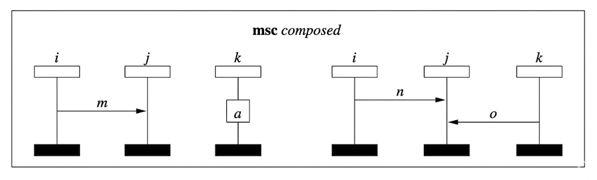
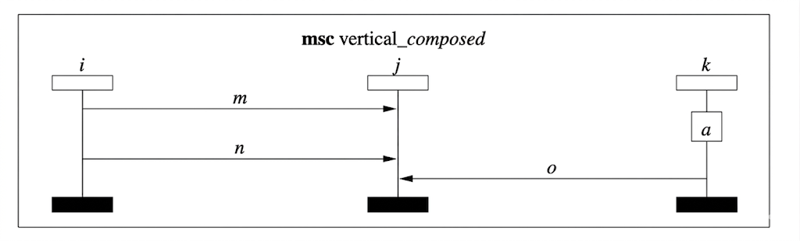

Experiments / Gemini 3 - Thinking / Example 5.docx
Question: Consider the following two message sequence charts labelled "first" and "second"; compose them horizontally and draw the resulting composed message sequence chart.

Answer:
To compose two Message Sequence Charts (MSCs) horizontally, we essentially merge the lifelines and place the events from both charts into a single diagram. In formal MSC semantics (such as MSC-96 or MSC-2000), horizontal composition is the parallel operator, meaning the events of "first" and "second" can occur in any order relative to each other, provided their internal ordering is preserved.
Components of the Composed Chart
Since both charts share the same instances ($i, j$, and $k$), the resulting chart will have three lifelines. The events included are:
From "first": * A message $m$ sent from instance $i$ to $j$.
A local action $a$ performed by instance $k$.
From "second":
A message $n$ sent from instance $i$ to $j$.
A message $o$ sent from instance $k$ to $j$.
The Resulting Chart
In the composed chart, all these events appear on the shared lifelines. Because they are composed horizontally (in parallel), there is no specific vertical ordering required between the events of the "first" set and the "second" set.
Formal Representation
If we denote the charts as $M_1$ and $M_2$, the horizontal composition is $M_1 \parallel M_2$. The set of traces for the resulting MSC is the interleaving of the traces of the individual charts.
Instance $i$ now has a sequence of two events (sending $m$ and $n$).
Instance $j$ now has a sequence of three receive events ($m, n$, and $o$).
Instance $k$ now has a local action $a$ and a send event $o$.
Would you like to see how this composition would change if it were done vertically (sequentially) instead?
Please draw the resulting of MSC.
Here is the composed Message Sequence Chart, titled "msc composed." It horizontally integrates the interactions from both the first and second charts into a single diagram.

Question: What is the order between sending m and receiving o in the composed diagram.
Answer:
In the horizontally composed Message Sequence Chart, there is no specific order between sending message $m$ and receiving message $o$.
In the semantics of Message Sequence Charts, horizontal composition represents parallel execution (concurrency). This means that while the internal ordering of events within each individual chart is preserved, there is no causal relationship or timing constraint between an event from the "first" chart and an event from the "second" chart.
Why they are unordered:
Independence: The message $m$ (from $i$ to $j$) and the message $o$ (from $k$ to $j$) originate from different original MSCs.
Concurrency: Horizontal composition implies that the processes described in "first" and "second" can happen at the same time or in any interleaved order.
Lack of Synchronization: There is no event that forces instance $i$ to wait for instance $k$, or vice versa, before these specific actions occur.
In formal terms, these two events are concurrent. If you were to trace the execution, you might see $m$ sent before $o$ is received, or $o$ received before $m$ is sent; both are valid behaviors of the composed system.
Would you like to know how a vertical composition would change this relationship?
Question:
Please consider the original two MSCs labelled "first" and "second", given here again. Please compose them vertically (by putting "first" on top and "second" at the bottom). Please draw the resulting composed diagram
Answer:

Question:
What is the order between internal event a and receiving o in the vertically composed MSC.
Answer:
In the vertically composed Message Sequence Chart, the internal event $a$ happens before the receiving of message $o$.
Vertical composition (often denoted as sequential composition) implies that for each instance, the events in the first chart must complete before the events in the second chart begin.
The Causal Chain
We can trace the ordering through the following logical steps:
Local Ordering on Lifeline $k$: Because "first" is placed on top of "second," all events on instance $k$ from the first chart must occur before events on instance $k$ from the second chart. Therefore, internal event $a$ occurs before the sending of message $o$.
Message Causality: In any MSC, a message must be sent before it can be received. Therefore, the sending of message $o$ (on instance $k$) occurs before the receiving of message $o$ (on instance $j$).
Transitivity: Following the chain of events, because $a < \text{send}(o)$ and $\text{send}(o) < \text{receive}(o)$, it follows that $a < \text{receive}(o)$.
Summary of Relationships
| Event A | Relationship | Event B | Reason |
|---|---|---|---|
| Internal event $a$ | Before | Sending $o$ | Sequential ordering on lifeline $k$ |
| Sending $o$ | Before | Receiving $o$ | Causal necessity of message passing |
| Internal event $a$ | Before | Receiving $o$ | Transitive property of the partial order |
In this vertical arrangement, instance $k$ acts as the "clock" that synchronizes this specific sequence. Even though $a$ and the receipt of $o$ happen on different lifelines, they are strictly ordered.